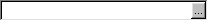
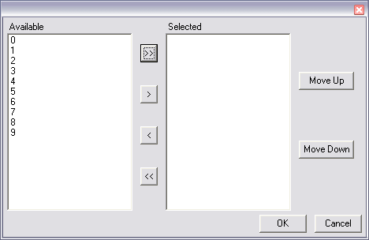

(list = #(), title = "", mandatory = false, width = 20, listField = false)
Similar to FieldControl, but has a choose button on the right side. The button will bring up a TwoListControl in a dialog. The list argument is passed to the TwoListControl to be used as the selection list on the right side. Choosing OK from the dialog will fill in the selection into the field. Cancelling from the dialog will not modify the fields contents.
For example:
Window(#(ChooseTwoList (1,2,3,4,5,6,7,8,9,0)))
Would display:
and clicking on the "..." button would display:
